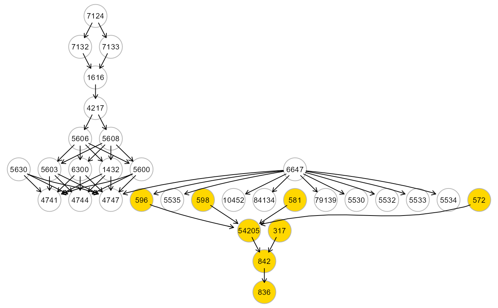
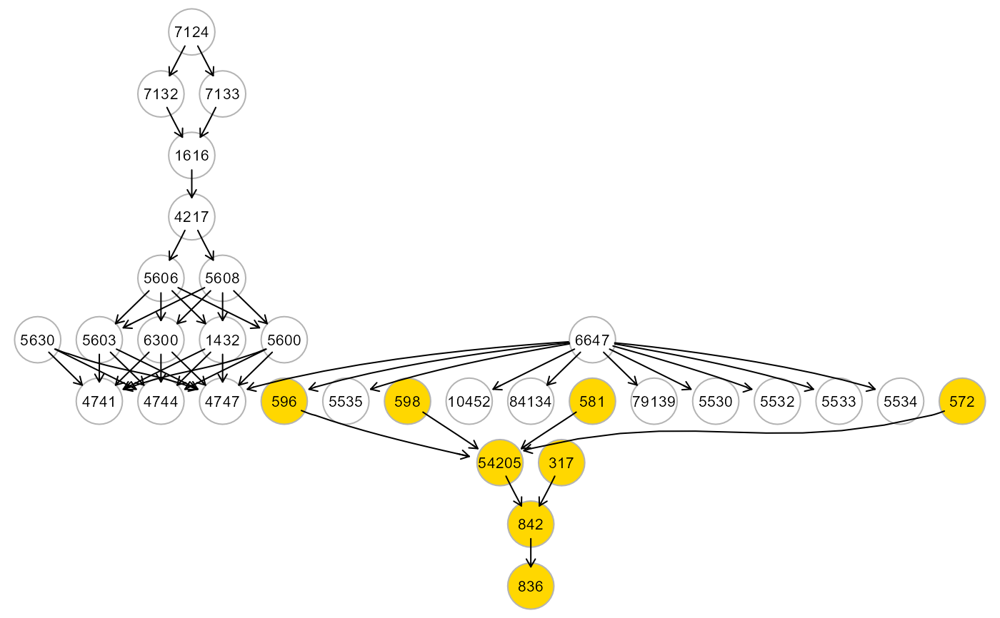

Extract and fit clusters from an input graph.
extractClusters(
graph,
data,
group = NULL,
membership = NULL,
map = FALSE,
verbose = FALSE,
...
)Arguments
- graph
Input network as an igraph object.
- data
A matrix or data.frame. Rows correspond to subjects, and columns to graph nodes (variables).
- group
A binary vector. This vector must be as long as the number of subjects. Each vector element must be 1 for cases and 0 for control subjects. Group specification enables node perturbation testing. By default,
group = NULL.- membership
A vector of cluster membership IDs. If NULL, clusters will be automatically generated with
clusterGraphusing the edge betweenness clustering ("ebc") algorithm.- map
Logical value. If TRUE, the plot of the input graph (coloured by cluster membership) will be generated along with independent module plots. If the input graph is very large, plotting could be computationally intensive (by default,
map = FALSE).- verbose
Logical value. If TRUE, a plot will be showed for each cluster.
- ...
Currently ignored.
Value
List of clusters as igraph objects and fitting results for each cluster as a lavaan object.
Examples
# \donttest{
library(huge)
als.npn <- huge.npn(alsData$exprs)
#> Conducting the nonparanormal (npn) transformation via shrunkun ECDF....done.
adjdata <- SEMbap(alsData$graph, als.npn)$data
#> d-separation test (basis set) of 420 edges...
#>
/ 0 % elapsed=00s
- 1 % elapsed=00s, remaining~02s
\ 2 % elapsed=00s, remaining~01s
| 4 % elapsed=00s, remaining~01s
/ 5 % elapsed=00s, remaining~01s
- 6 % elapsed=00s, remaining~01s
\ 7 % elapsed=00s, remaining~01s
| 8 % elapsed=00s, remaining~01s
/ 10% elapsed=00s, remaining~01s
- 11% elapsed=00s, remaining~01s
\ 12% elapsed=00s, remaining~01s
| 13% elapsed=00s, remaining~01s
/ 14% elapsed=00s, remaining~01s
- 15% elapsed=00s, remaining~01s
\ 17% elapsed=00s, remaining~01s
| 18% elapsed=00s, remaining~01s
/ 19% elapsed=00s, remaining~01s
- 20% elapsed=00s, remaining~01s
\ 21% elapsed=00s, remaining~01s
| 23% elapsed=00s, remaining~01s
/ 24% elapsed=00s, remaining~01s
- 25% elapsed=00s, remaining~01s
\ 26% elapsed=00s, remaining~01s
| 27% elapsed=00s, remaining~01s
/ 29% elapsed=00s, remaining~01s
- 30% elapsed=00s, remaining~01s
\ 31% elapsed=00s, remaining~01s
| 32% elapsed=00s, remaining~01s
/ 33% elapsed=00s, remaining~01s
- 35% elapsed=00s, remaining~01s
\ 36% elapsed=00s, remaining~01s
| 37% elapsed=00s, remaining~01s
/ 38% elapsed=00s, remaining~01s
- 39% elapsed=00s, remaining~01s
\ 40% elapsed=00s, remaining~01s
| 42% elapsed=00s, remaining~01s
/ 43% elapsed=00s, remaining~01s
- 44% elapsed=00s, remaining~01s
\ 45% elapsed=00s, remaining~01s
| 46% elapsed=00s, remaining~00s
/ 48% elapsed=00s, remaining~00s
- 49% elapsed=00s, remaining~00s
\ 50% elapsed=00s, remaining~00s
| 51% elapsed=00s, remaining~00s
/ 52% elapsed=00s, remaining~00s
- 54% elapsed=00s, remaining~00s
\ 55% elapsed=00s, remaining~00s
| 56% elapsed=01s, remaining~00s
/ 57% elapsed=01s, remaining~00s
- 58% elapsed=01s, remaining~00s
\ 60% elapsed=01s, remaining~00s
| 61% elapsed=01s, remaining~00s
/ 62% elapsed=01s, remaining~00s
- 63% elapsed=01s, remaining~00s
\ 64% elapsed=01s, remaining~00s
| 65% elapsed=01s, remaining~00s
/ 67% elapsed=01s, remaining~00s
- 68% elapsed=01s, remaining~00s
\ 69% elapsed=01s, remaining~00s
| 70% elapsed=01s, remaining~00s
/ 71% elapsed=01s, remaining~00s
- 73% elapsed=01s, remaining~00s
\ 74% elapsed=01s, remaining~00s
| 75% elapsed=01s, remaining~00s
/ 76% elapsed=01s, remaining~00s
- 77% elapsed=01s, remaining~00s
\ 79% elapsed=01s, remaining~00s
| 80% elapsed=01s, remaining~00s
/ 81% elapsed=01s, remaining~00s
- 82% elapsed=01s, remaining~00s
\ 83% elapsed=01s, remaining~00s
| 85% elapsed=01s, remaining~00s
/ 86% elapsed=01s, remaining~00s
- 87% elapsed=01s, remaining~00s
\ 88% elapsed=01s, remaining~00s
| 89% elapsed=01s, remaining~00s
/ 90% elapsed=01s, remaining~00s
- 92% elapsed=01s, remaining~00s
\ 93% elapsed=01s, remaining~00s
| 94% elapsed=01s, remaining~00s
/ 95% elapsed=01s, remaining~00s
- 96% elapsed=01s, remaining~00s
\ 98% elapsed=01s, remaining~00s
| 99% elapsed=01s, remaining~00s
/ 100% elapsed=01s, remaining~00s
#> Number of significant local tests: 220 / 420
#>
# Clusters creation
clusters <- extractClusters(graph = alsData$graph, data = adjdata)
#> modularity = 0.5588502
#>
#> Community sizes
#> 3 2 1 4
#> 4 8 9 11
#>
#> cluster N.nodes N.edges dev_df srmr pv.act pv.inh
#> 1 HM1 9 8 1.086 0.061 1 1
#> 2 HM2 8 7 0.826 0.039 1 1
#> 3 HM4 11 25 1.693 0.061 1 1
#> 4 HM9999 4 4 NaN 0.000 1 1
head(parameterEstimates(clusters$fit$HM1))
#> lhs op rhs est se z pvalue ci.lower ci.upper
#> 1 z10452 ~ z6647 -0.044 0.079 -0.553 0.580 -0.198 0.111
#> 2 z5530 ~ z6647 -0.066 0.079 -0.833 0.405 -0.220 0.089
#> 3 z5532 ~ z6647 -0.017 0.079 -0.218 0.827 -0.172 0.138
#> 4 z5533 ~ z6647 -0.179 0.078 -2.302 0.021 -0.332 -0.027
#> 5 z5534 ~ z6647 -0.066 0.079 -0.838 0.402 -0.221 0.089
#> 6 z5535 ~ z6647 -0.430 0.071 -6.019 0.000 -0.570 -0.290
head(parameterEstimates(clusters$fit$HM2))
#> lhs op rhs est se z pvalue ci.lower ci.upper
#> 1 z54205 ~ z572 -0.140 0.071 -1.962 0.050 -0.280 0.000
#> 2 z54205 ~ z581 -0.247 0.071 -3.463 0.001 -0.387 -0.107
#> 3 z54205 ~ z596 0.119 0.073 1.634 0.102 -0.024 0.261
#> 4 z54205 ~ z598 -0.315 0.073 -4.338 0.000 -0.457 -0.173
#> 5 z836 ~ z842 0.049 0.079 0.620 0.536 -0.106 0.204
#> 6 z842 ~ z317 0.063 0.079 0.798 0.425 -0.092 0.218
head(parameterEstimates(clusters$fit$HM4))
#> lhs op rhs est se z pvalue ci.lower ci.upper
#> 1 z1432 ~ z5606 0.440 0.070 6.257 0.000 0.302 0.578
#> 2 z1432 ~ z5608 -0.110 0.070 -1.560 0.119 -0.248 0.028
#> 3 z4741 ~ z1432 0.106 0.078 1.355 0.175 -0.047 0.258
#> 4 z4741 ~ z5600 -0.115 0.076 -1.509 0.131 -0.264 0.034
#> 5 z4741 ~ z5603 0.140 0.076 1.840 0.066 -0.009 0.289
#> 6 z4741 ~ z5630 0.002 0.076 0.028 0.978 -0.147 0.152
gplot(clusters$clusters$HM2)
 # Map cluster on the input graph
g <- alsData$graph
c <- clusters$clusters$HM2
V(g)$color <- ifelse(V(g)$name %in% V(c)$name, "gold", "white")
gplot(g)

# }
# Map cluster on the input graph
g <- alsData$graph
c <- clusters$clusters$HM2
V(g)$color <- ifelse(V(g)$name %in% V(c)$name, "gold", "white")
gplot(g)

# }